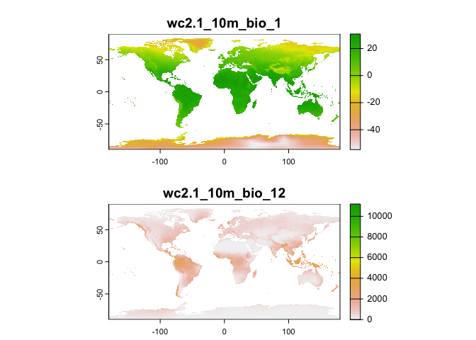
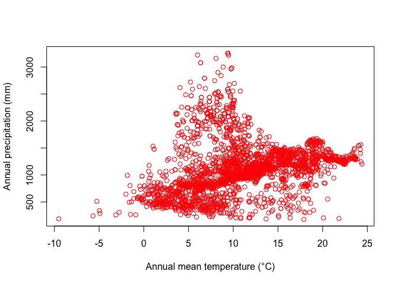
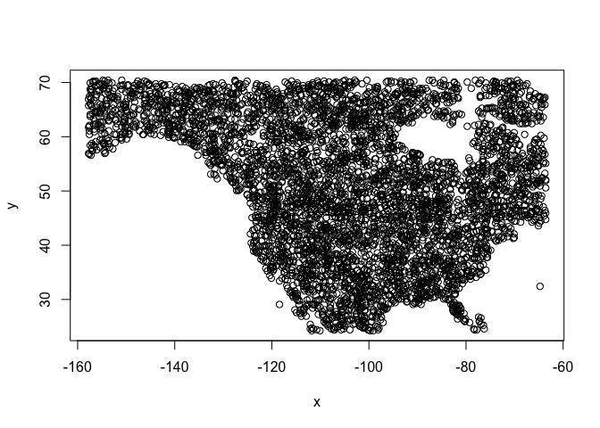
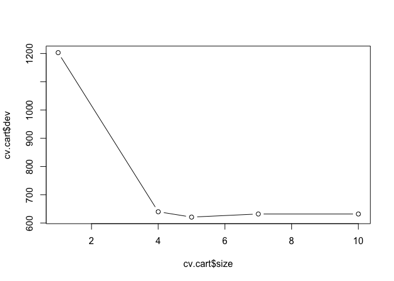
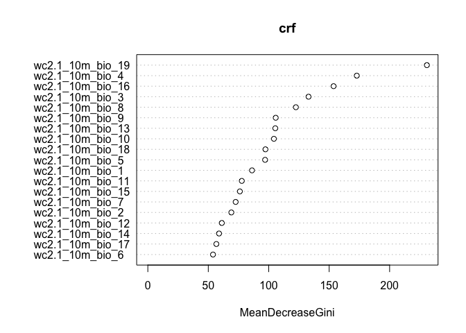
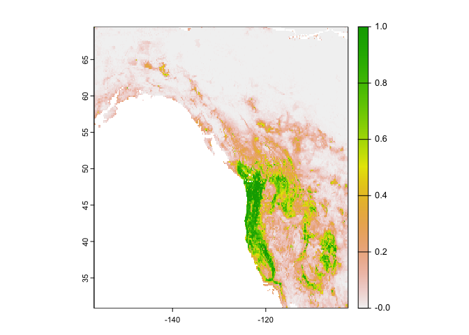
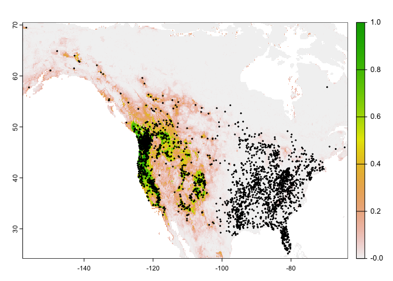
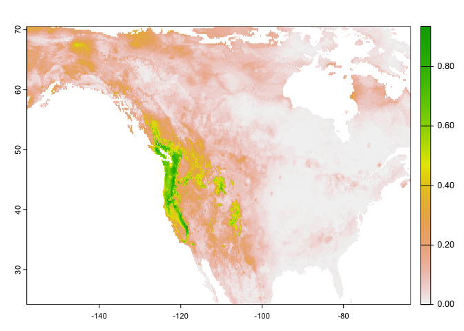

Regression Trees
GEO 200CN - Quantitative Geography
Professor Noli Brazil
June 3, 2024
This lab guide goes through the use of regression trees to make spatial predictions. It follows closely the material presented in ISLR Ch. 8. The objectives of this lab guide are as follows
- Learn how to run classification trees
- Learn how to prune classification trees
- Learn how to run regression and classification random forest models
- Learn how to make predictions using a random forest model
To achieve these objectives, you will be applying regression tree methods in species distribution modelling or ecological niche modeling. The objective in species distribution modelling is to predict the entire range of a species based on a set of locations where it has been observed. In this lab guide, we use the hominid species Imaginus magnapedum (also known under the vernacular names of “bigfoot” and “sasquatch”). This species is so hard to find (at least by scientists) that its very existence is commonly denied by the mainstream media! For more information about this controversy, see the article by Lozier, Aniello and Hickerson: Predicting the distribution of Sasquatch in western North America: anything goes with ecological niche modelling. Note that much of this lab guide has been adapted from Spatial Data Science.
Installing and loading packages
We’ll be using several new packages in this lab guide. First, install them
install.packages(c("tree", "randomForest", "geodata", "predicts"))Second, load these packages and the others we will need for executing the commands in this lab guide.
library(tree)
library(randomForest)
library(geodata)
library(predicts)
library(tidyverse)
library(terra)
library(rspat)Bringing in the data
The research objectives are to find out
- What the complete range of the bigfoot species might be.
- How good (general) our model is by predicting the range of the Eastern bigfoot sub-species, with data from the Western sub-species.
- How good (general) our model is by predicting into the future.
Observations
First bring in the bigfoot location data bigfoot from the rspat package.
bf <- spat_data("bigfoot")What kind of object is this? And how many cases and variables are we working with?
class(bf)## [1] "data.frame"dim(bf)## [1] 3092 3head(bf)## lon lat Class
## 1 -142.9000 61.50000 A
## 2 -132.7982 55.18720 A
## 3 -132.8202 55.20350 A
## 4 -141.5667 62.93750 A
## 5 -149.7853 61.05950 A
## 6 -141.3165 62.77335 AThese data show the latitude and longitude information of the known locations of bigfoot sightings. Let’s plot where these fellas like to roam. We’ll also add country borders for Canada, Mexico and the United States taken from the geodata package.
plot(bf[,1:2], cex=0.5, col='red')
wrld <- geodata::world(path=".")
class(wrld)## [1] "SpatVector"
## attr(,"package")
## [1] "terra"bnds <- wrld[wrld$NAME_0 %in% c("Canada", "Mexico", "United States"), ]
class(bnds)## [1] "SpatVector"
## attr(,"package")
## [1] "terra"lines(bnds)
So they are in Canada and in the United States, but no reports from Mexico…so far.
Predictor variables
We want to predict bigfoot locations, so we need predictors. The main predictors typically used in species distribution modeling are climate data. Specifically, we use ‘bioclimatic variables’. A record layout of the variables can be found here. Here we used a spatial resolution of 10 minutes (one sixth of a degree). That is relatively coarse but it makes the download and processing faster. We’ll bring this data in from the package geodata.
wc <- geodata::worldclim_global("bio", res=10, ".")
class(wc)## [1] "SpatRaster"
## attr(,"package")
## [1] "terra"What does these data look like? Plot the variables bio1 (Annual Mean Temperature) and bio12 (Annual Precipitation) for the world.
plot(wc[[c(1, 12)]], nr=2)
Now extract climate data for the locations of our observations. That
is, get data about the climate where the species have been spotted. We
use the extract() function from the package
terra.
bfc <- terra::extract(wc, bf[,1:2])
head(bfc, 3)## ID wc2.1_10m_bio_1 wc2.1_10m_bio_2 wc2.1_10m_bio_3 wc2.1_10m_bio_4
## 1 1 -1.832979 12.504708 28.95899 1152.4308
## 2 2 6.360650 5.865935 32.27475 462.5731
## 3 3 6.360650 5.865935 32.27475 462.5731
## wc2.1_10m_bio_5 wc2.1_10m_bio_6 wc2.1_10m_bio_7 wc2.1_10m_bio_8
## 1 20.34075 -22.840000 43.18075 5.327750
## 2 16.65505 -1.519947 18.17500 3.964495
## 3 16.65505 -1.519947 18.17500 3.964495
## wc2.1_10m_bio_9 wc2.1_10m_bio_10 wc2.1_10m_bio_11 wc2.1_10m_bio_12
## 1 -0.6887083 11.80792 -16.038542 991
## 2 10.4428196 12.28183 1.467686 3079
## 3 10.4428196 12.28183 1.467686 3079
## wc2.1_10m_bio_13 wc2.1_10m_bio_14 wc2.1_10m_bio_15 wc2.1_10m_bio_16
## 1 120 42 31.32536 337
## 2 448 141 35.27518 1127
## 3 448 141 35.27518 1127
## wc2.1_10m_bio_17 wc2.1_10m_bio_18 wc2.1_10m_bio_19
## 1 157 288 216
## 2 468 630 873
## 3 468 630 873We remove the first column with the ID that we do not need.
bfc <- bfc %>%
dplyr::select(-ID)Now we can plot the species’ distribution in a part of the environmental space. For example, here is a plot of temperature vs rainfall of sites where Bigfoot was observed.
plot(bfc[ ,"wc2.1_10m_bio_1"], bfc[, "wc2.1_10m_bio_12"], col="red",
xlab="Annual mean temperature (°C)", ylab="Annual precipitation (mm)")
Background data
The dataset bf gives us data for bigfoot sightings. The dataset bfc gives us the climate data for the locations of these sightings. But, in order to build a prediction model, we also need the locations and their climate data for where bigfoot was not observed. But we do not have data from a systematic survey that determined both presence and absence. We have presence-only data.
The common trick to deal with this is to not model presence versus absence, but presence versus a ‘random expectation’. This random expectation (also referred to as ‘background’, or ‘random-absence’ data) is what you would get if the species had no preference for any of the predictor variables.
There is not much point in taking absence data from very far away (tropical Africa or Antarctica). Typically they are taken from more or less the entire study area for which we have presence data. Our study region is North America. So, you create a set of random climate observations from within the area of North America where bigfoot observations have been made.
To do so, we first get the extent of all points using the function
ext(). Note that we have to use vect() from
terra to transform bf into a
SpatVector. We add a little buffer to the extent.
#measures extent of area for bigfoot observations
ext_bf <- ext(vect(bf[, 1:2])) + 1
ext_bf## SpatExtent : -157.75, -63.4627, 24.141, 70.5 (xmin, xmax, ymin, ymax)And then we take 5,000 random samples (excluding NA cells) from SpatExtent ext_bf, by using it as a “window” (blacking out all other areas) on the climate SpatRaster wc.
#set seed for reproducibility since we are random sampling
set.seed(0)
window(wc) <- ext_bf
#takes a 5000 random samples from wc within the extent e for bigfoot observations
bg <- spatSample(wc, 5000, "random", na.rm=TRUE, xy=TRUE)
dim(bg)## [1] 5000 21#5000 random points with climate variables
head(bg)## x y wc2.1_10m_bio_1 wc2.1_10m_bio_2 wc2.1_10m_bio_3
## 1 -99.2500 66.75000 -13.2934895 7.870646 14.96619
## 2 -106.0833 42.08333 5.6722708 14.530958 36.82943
## 3 -111.9167 46.58333 6.7605939 14.135854 35.23372
## 4 -106.9167 54.75000 0.4086979 11.528605 24.43290
## 5 -118.2500 67.08333 -9.1363859 8.185354 16.34505
## 6 -111.2500 38.91667 8.4194584 15.997125 38.84047
## wc2.1_10m_bio_4 wc2.1_10m_bio_5 wc2.1_10m_bio_6 wc2.1_10m_bio_7
## 1 1638.6833 15.42850 -37.16100 52.58950
## 2 894.3715 27.86600 -11.58875 39.45475
## 3 927.7927 28.14375 -11.97650 40.12025
## 4 1290.1088 22.55225 -24.63250 47.18475
## 5 1567.0846 17.46575 -32.61275 50.07850
## 6 904.0610 30.49050 -10.69625 41.18675
## wc2.1_10m_bio_8 wc2.1_10m_bio_9 wc2.1_10m_bio_10 wc2.1_10m_bio_11
## 1 6.484917 -31.617332 7.518209 -31.76942
## 2 9.226916 -4.839750 17.168291 -4.83975
## 3 15.638333 -4.921750 18.186209 -4.92175
## 4 15.417084 -13.864500 15.417084 -16.31392
## 5 8.609292 -21.353209 10.573625 -27.49783
## 6 19.076958 3.179209 19.812834 -2.50475
## wc2.1_10m_bio_12 wc2.1_10m_bio_13 wc2.1_10m_bio_14 wc2.1_10m_bio_15
## 1 171 33 4 70.29919
## 2 288 42 13 38.78144
## 3 293 48 9 53.40759
## 4 471 86 16 58.32499
## 5 223 43 7 61.21693
## 6 228 28 11 32.40370
## wc2.1_10m_bio_16 wc2.1_10m_bio_17 wc2.1_10m_bio_18 wc2.1_10m_bio_19
## 1 90 13 78 13
## 2 112 41 90 41
## 3 129 35 115 35
## 4 220 53 220 56
## 5 108 27 93 29
## 6 83 40 72 44Above, with spatSample(), we used the argument
xy=TRUE to be able to show were these points are from.
plot(bg[, c("x", "y")])
But we otherwise do not need them so we remove them.
bg <- bg[, -c(1:2)]We can now compare the climate of the presence and background points, for example, for temperature and rainfall
plot(bg[,1], bg[,12], xlab="Annual mean temperature (°C)",
ylab="Annual precipitation (mm)", cex=.8)
points(bfc[,1], bfc[,12], col="red", cex=.6, pch="+")
legend("topleft", c("observed", "background"), col=c("red", "black"), pch=c("+", "o"), pt.cex=c(.6, .8))
So we see that while Bigfoot is widespread, it is not common in cold areas, nor in hot and dry areas.
East vs West
Now we have the data to fit a model. But let’s split the data into East (greater than -102 longitude) and West. In this case, we may believe Western and Eastern bigfoots are actually different, albeit related, sub-species (for example, the Eastern Sasquatch is darker and less hairy). We are going to fit the model using Western data and then see if it predicts well for the Eastern data.
#eastern points
bfe <- bfc[bf[,1] > -102, ]
#western points
bfw <- bfc[bf[,1] <= -102, ]And now we combine the presence (“1”) with the background (“0”) data (We use the same background data for both subspecies) for the western and eastern portions of North America, separately. Our predictive models will be based on the western dataset.
dw <- rbind(cbind(pa=1, bfw), cbind(pa=0, bg))
de <- rbind(cbind(pa=1, bfe), cbind(pa=0, bg))
dw <- data.frame(dw)
de <- data.frame(na.omit(de))
dim(dw)## [1] 6224 20dim(de)## [1] 6866 20Now, we are ready. Let’s run some regression trees!!
Classification trees
Our response variable is whether bigfoot is located in a particular location (Yes) or not (No). We can use a classification method to predict this binary variable. Here, we use a Classification Tree (CART), which is discussed on page 311 in ISLR. To run a CART in R, we’ll need to convert the (0,1) numeric indicator pa into a new (No, Yes) factor variable we’ll name fpa.
dw$fpa <- as.factor(ifelse(dw$pa == 1, "Yes", "No"))Use the tree() function in the tree
package to run a CART. The syntax of the function is similar to
lm() and other linear regression modelling functions we’ve
used extensively in this class. Note that we take out the (0,1)
indicator from the dataset using the function select() when
we run the model. Also note that there is another package in R that runs
regression trees, rpart, that many prefer
over tree since its functions provide better
visualizations, among a few advantages. We go with tree
to follow ISLR (see pages 323-331).
#use the western data in all the predictor columns with the climate except "pa" which is the response variable
cart1 <- tree(fpa~., data=dplyr::select(dw,-pa))Here is a summary of the results.
summary(cart1)##
## Classification tree:
## tree(formula = fpa ~ ., data = dplyr::select(dw, -pa))
## Variables actually used in tree construction:
## [1] "wc2.1_10m_bio_4" "wc2.1_10m_bio_10" "wc2.1_10m_bio_15" "wc2.1_10m_bio_3"
## [5] "wc2.1_10m_bio_19" "wc2.1_10m_bio_18" "wc2.1_10m_bio_16" "wc2.1_10m_bio_12"
## Number of terminal nodes: 10
## Residual mean deviance: 0.4149 = 2578 / 6214
## Misclassification error rate: 0.09512 = 592 / 6224The misclassification error rate is the training error rate, which is around 10%. And here we plot the decision tree diagram, like the one shown in Figure 8.6 in ISLR, which they describe in detail on pages 312-314.
plot(cart1, main="Classification Tree")
text(cart1, cex=.8, digits=1)
Question 1: Which variable is the most important indicator of where our species might be located?
Question 2: Describe the conditions under which you are likely to find our species?
Tree Pruning
Next, we consider whether pruning the tree might lead to improved
results. Pruning is described in ISLR starting on page 307. The
algorithm is located on page 309. The key step is step 3, which
describes using k-fold cross validation to find the best tuning
parameter alpha, which dictates the number of terminal nodes of the best
fit tree. The function cv.tree() performs cross-validation
in order to determine the optimal level of tree complexity. Plug in the
big tree cart1 produced by tree() in the section
above followed by FUN = prune.misclass, which indicates
that we want the classification error rate to guide the cross-validation
and pruning process. We set the seed for reproducibility.
#kfold cuts the fold in random so set a seed.
set.seed(123)
cv.cart <- cv.tree(cart1, FUN = prune.misclass)Let’s see what we get
names(cv.cart)## [1] "size" "dev" "k" "method"and their values
cv.cart## $size
## [1] 10 7 5 4 1
##
## $dev
## [1] 632 632 621 640 1203
##
## $k
## [1] -Inf 0.0000 9.0000 27.0000 195.6667
##
## $method
## [1] "misclass"
##
## attr(,"class")
## [1] "prune" "tree.sequence"Note that, despite the name, dev corresponds to the cross-validation error rate in this instance. The results under size give the number of terminal nodes (size of the tree). The tree with five terminal nodes (see size) results in the lowest cross-validation error rate, with 621 cross-validation errors (see dev). We plot the error rate as a function of the size.
plot(cv.cart$size, cv.cart$dev, type = "b")
Let’s be parsimonious and choose 5 as the best fit tree. We then
apply the prune.misclass() function in order to prune the
tree to obtain the five-node tree.
prune.cart <- prune.misclass(cart1, best = 5)And now the decision tree diagram
plot(prune.cart, main="Regression Tree")
text(prune.cart, cex=.8, digits=1)
Differ much from the tree we got from cart1?
Random Forest
CART gives us a nice result to look at that can be easily interpreted. But the approach suffers from high variance (meaning that the model will be over-fit, it is different each time a somewhat different datasets are used). Random Forest does not have that problem as much. The method, which is an extension of Bagging, is discussed starting on page 319 in ISLR.
Classification
We fit the Random Forest model using the function
randomForest() from the package
randomForest.
#use the western data in all the predictor columns with the climate except "pa" which is the response variable
crf <- randomForest(fpa~., data=dplyr::select(dw,-pa))
crf##
## Call:
## randomForest(formula = fpa ~ ., data = dplyr::select(dw, -pa))
## Type of random forest: classification
## Number of trees: 500
## No. of variables tried at each split: 4
##
## OOB estimate of error rate: 7.18%
## Confusion matrix:
## No Yes class.error
## No 4797 203 0.0406000
## Yes 244 980 0.1993464The variable importance plot shows which variables are most important in fitting the model. Variable importance is described in ISLR on page 319. The plot is generated by randomizing each predictor variable one by one and then computing the decline in model prediction.
varImpPlot(crf)
Regression
In the above sections, we’ve modelled bigfoot locations from a
classification perspective. But, we can also use regression. In this
case, by using a (0,1) numeric variable as the response, we are
modelling the probability that bigfoot is located in a location. We
still use the randomForest() function to run a Random
Forest regression model.
Note that there is an important parameter that differentiates Random
Forests from regular bagging (page 319 in ISLR talks about this
parameter). In the randomForest() function, this parameter
is designated by the argument mtry =. We did not specify
mtry = above, and thus took whatever the default is.
Instead of the default, we can instead find the best value for this
parameter by using the function tuneRF().
trf <- tuneRF(dplyr::select(dw,-c(pa,fpa)), dw[, 'pa'])## mtry = 6 OOB error = 0.05558451
## Searching left ...
## mtry = 3 OOB error = 0.05530499
## 0.005028692 0.05
## Searching right ...
## mtry = 12 OOB error = 0.05752334
## -0.0348808 0.05
We then find the best value (lowest error).
trf## mtry OOBError
## 3 3 0.05530499
## 6 6 0.05558451
## 12 12 0.05752334mt <- trf[which.min(trf[,2]), 1]
mt## [1] 3We can then plug this value into the randomForest()
function in the argument mtry =
rrf <- randomForest(dw[, 2:ncol(bfc)], dw[, 'pa'], mtry=mt)
rrf##
## Call:
## randomForest(x = dw[, 2:ncol(bfc)], y = dw[, "pa"], mtry = mt)
## Type of random forest: regression
## Number of trees: 500
## No. of variables tried at each split: 3
##
## Mean of squared residuals: 0.0535169
## % Var explained: 66.13Question 3: What did tuneRF help us find? What does the value of mt represent?
Here we show the variable importance plot for the model.
varImpPlot(rrf)
Predict
We can use the random forest models we constructed above to make predictions to any other place for which we have values for the predictor variables. Our climate data is global so we could find suitable places for bigfoot anywhere. But before we start placing sasquatch anywhere we please, let’s first predict their locations in the western portion of North America.
We need to establish the spatial extent of the observed western locations to make predictions.
ew <- ext(vect(bf[bf[,1] <= -102, 1:2]))
#get climate data across raster covering western extent
west <- geodata::worldclim_global("bio", res=10, ".")
window(west) <- ewRegression
Let’s interpolate the probability that bigfoot will be present in a location using the regression random forest model rrf
rp <- predict(west, rrf, ext = ew, na.rm=TRUE)Show a raster map of the predicted range for the probability of our species presence across the study area.
plot(rp)
Note that the regression predictions are well-behaved, in the sense that they are between 0 and 1. However, they are continuous within that range, and if you wanted presence/absence, you would need a threshold (i.e. if it is above the threshold, bigfoot is present, otherwise absent). To get the optimal threshold, you would normally have a hold out data set (see ISLR 8.3 for examples of using test and training data), but here we use a training data for simplicity.
#set seed for reproducibility since we are random sampling
set.seed(123)
i <- sample(nrow(dw), 0.2 * nrow(dw))
test <- dw[i,]
train <- dw[-i,]We then predict.
eva <- pa_evaluate(predict(rrf, test[test$pa==1, ]), predict(rrf, test[test$pa==0, ]))
eva## @stats
## np na prevalence auc cor pcor ODP
## 1 241 1003 0.194 1 0.96 0 0.806
##
## @thresholds
## max_kappa max_spec_sens no_omission equal_prevalence equal_sens_spec
## 1 0.44 0.44 0.44 0.194 0.494
##
## @tr_stats
## treshold kappa CCR TPR TNR FPR FNR PPP NPP MCR OR
## 1 0 0 0.19 1 0 1 0 0.19 NaN 0.81 NaN
## 2 0 0.22 0.53 1 0.42 0.58 0 0.29 1 0.47 Inf
## 3 0 0.22 0.53 1 0.42 0.58 0 0.29 1 0.47 Inf
## 4 ... ... ... ... ... ... ... ... ... ... ...
## 659 1 0.11 0.82 0.07 1 0 0.93 1 0.82 0.18 Inf
## 660 1 0.11 0.82 0.07 1 0 0.93 1 0.82 0.18 Inf
## 661 1 0 0.81 0 1 0 1 NaN 0.81 0.19 NaNTo get a good threshold to determine presence/absence and plot the prediction, we can use the “max specificity + sensitivity” threshold.
#uses the evaluation to find an optimal threshold
tr <- threshold(eva)
tr## max_kappa max_spec_sens no_omission equal_prevalence equal_sens_spec
## 1 0.4401238 0.4401238 0.4401238 0.194123 0.4937809#choosing max_spec_sens at the threshold value and plotting range as a binary
plot(rp > tr$max_spec_sens)
The max_spec_sens represents the point at which the combined sensitivity (true positive rate) and specificity (true negative rate) are maximized.
Classification
We can also use the classification Random Forest model crf to make a categorical present/absent prediction.
rc <- predict(west, crf, na.rm=TRUE)
plot(rc)
They are different because the classification used a threshold of 0.5, which is not necessarily appropriate.
You can get probabilities for the classes (in this case there are 2 classes, presence and absence, and we only plot presence).
rc2 <- predict(west, crf, type="prob", na.rm=TRUE)
#shows the probability of sightings in the U.S.
plot(rc2, 2)
Extrapolation
Remember that we fitted our model using the Western portion of the region. Now, let’s see if our model is general enough to predict the distribution of the Eastern species. We’ll use the regression random forest model to predict. We need to establish the spatial extent of the observed eastern locations to make predictions, and get climate data.
ee <- ext(vect(bf[bf[,1] > -102, 1:2]))
east <- geodata::worldclim_global("bio", res=10, ".")
window(east) <- eeNow we predict species location for the eastern location using our random forest model rrf.
rcusa <- predict(east, rrf, ext=ee, na.rm=TRUE)Plot the predictions.
plot(rcusa)
Plot the predictions with the observed locations
plot(rcusa)
points(bf[bf[,1] > -102,1:2], cex=.25)
Let’s get the predictions we got for the western and eastern sides together.
#predict for the entire region using rrf
allrusa <- predict(wc, rrf, na.rm = TRUE)
#plot the predictions and observed points
plot(allrusa)
points(bf[,1:2], cex=.25)
Question 4: Why would it be that the model does not extrapolate well to eastern North America?
We can also estimate range shifts due to climate change. In other words, we can use the same model, but now extrapolate in time (and space). We grab forecasted (future) versions of our climate variables.
fut <- cmip6_world("CNRM-CM6-1", "585", "2061-2080", var="bio", res=10, path=".")
names(fut)## [1] "bio01" "bio02" "bio03" "bio04" "bio05" "bio06" "bio07" "bio08" "bio09"
## [10] "bio10" "bio11" "bio12" "bio13" "bio14" "bio15" "bio16" "bio17" "bio18"
## [19] "bio19"We need to convert the names of these variables to the same names used in our random forest model.
names(wc)## [1] "wc2.1_10m_bio_1" "wc2.1_10m_bio_2" "wc2.1_10m_bio_3" "wc2.1_10m_bio_4"
## [5] "wc2.1_10m_bio_5" "wc2.1_10m_bio_6" "wc2.1_10m_bio_7" "wc2.1_10m_bio_8"
## [9] "wc2.1_10m_bio_9" "wc2.1_10m_bio_10" "wc2.1_10m_bio_11" "wc2.1_10m_bio_12"
## [13] "wc2.1_10m_bio_13" "wc2.1_10m_bio_14" "wc2.1_10m_bio_15" "wc2.1_10m_bio_16"
## [17] "wc2.1_10m_bio_17" "wc2.1_10m_bio_18" "wc2.1_10m_bio_19"names(fut) <- names(wc)We’ll predict for all of North America.
window(fut) <- ext_bf
pfut <- predict(fut, rrf, na.rm=TRUE)
plot(pfut)
Question 5: Make a map to show where conditions are improving for western bigfoot, and where they are not. Is the species headed toward extinction?
You’re done with the last lab of the class. Hooray!! Where’d all the time go?

This
work is licensed under a
Creative
Commons Attribution-NonCommercial 4.0 International License.
Website created and maintained by Noli Brazil